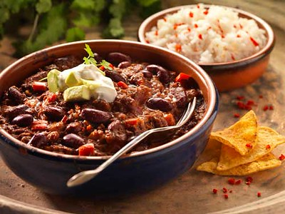

The BEST Chilli Con Carne

Description
This recipe has been tested over many years to create a rich, spicy,
and delicious chilli con carne that you will make over and over again!
Ingredients
- Olive oil (As needed)
- 1 large white onion
- 1 large red pepper
- 3 cloves of garlic
- 1kg ground/minced beef
- 2 tablespoons tomato puree
- 240ml red wine
- 400g cans chopped tomatoes
- 400g cans kidney beans
- 3 tablespoons worcestershire sauce
- 2 beef stock cubes
- 2 tablespoons each: Paprika, cumin, chilli powder
- 1 tablespoon each: oregano, ground coriander, sugar, salt
- 1/2 teaspoon black pepper
Steps
- Add a splash of oil to a large deep pot over medium heat. Add the onion, red pepper &
garlic and fry until they begin to soften and take on a tinge of golden colour.
- Add in the beef, break it up with your wooden spoon and continue to fry over medium
heat until browned all over. Stir in 2 heaped tbsp tomato paste then deglaze with red
wine. Allow to simmer for a few mins to allow the meat to soak in the wine.
- Add the canned chopped tomatoes. Fill each can halfway up with water, swill, then add
that in too. Add in the drained kidney beans, 2 beef stock cubes, 3 tbsp Worcestershire
sauce, 2 tbsp cumin, paprika, chilli powder, 1 tsp oregano, ground coriander, salt &
sugar and 1/2 tsp black pepper.
- Give it a good stir as you bring to a simmer, making sure everything is well blended.
Once simmering pop on the lid, turn down the heat to low and allow it to bubble away for
1 hour 30mins, stirring occasionally. I know it seems a long time but it truly makes a
difference.
- Take off the lid and allow to simmer until the sauce thickens to your desired consistency
– 5-10 mins or so, depending on how much it has already reduced (keep simmering longer
to thicken if needed – just keep simmering, it will thicken, I promise). Adjust seasoning/spice
with chilli powder, salt, sugar and black pepper if needed.
- Serve over rice with cheese, a dollop of sour cream, a sprinkle of fresh coriander and a
squeeze of lime juice!
Home